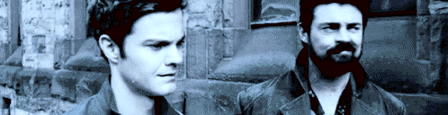
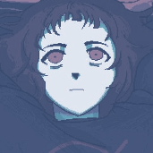
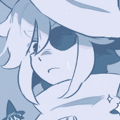
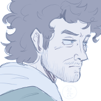
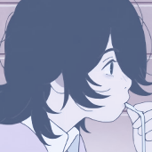
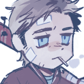
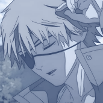
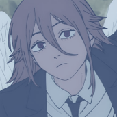
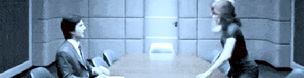

▄▀▄▀▄▀▄▀▄▀▄▀▄▀
⠀⠀⠀ IT/ITS + THEY/THEM , ADULT
infp 4w5 496 so/sp melancholic
helloo ! i am siffrin or march! a digital trout with love for art and music! i'm an anxious person, but i always love to chat, even if i take a bit to reply! :D reciprocated kindness and all that
i was sworn to my paladin ashley on december 8th, 2024!
i currently love the boys, revue starlight, severance, the lonely island, persona 3, iasip, palm springs, deltarune, hotline miami, and JACK QUAID!!!

if it's clickable, then it's fanart that links back to the source! this goes for other art on this site too!







 some things that make me.. well , me !
some things that make me.. well , me !

animanga
revue starlight, bocchi the rock, girls last tour,
madoka magica, chainsaw man, space patrol luluco
movies
palm springs, guardians of the galaxy, mcu spiderman,
baby driver, scott pilgrim, whiplash,
aftersun, nimona, spiderverse, drive, i saw the tv glow
tv shows
severance, the boys, it's always sunny, parks and recreation,
breaking bad, the good place, peacemaker, rick and morty, brooklyn 99, strip law

games
persona 3, deltarune, cave story, left 4 dead 2, milk in
/ outside a bag of milk, alan wake, hotline miami, rhythm heaven
, night in the woods, omori, oneshot, transistor, danganronpa, ff14, momodora
miscellaneous
jack quaid, flowers, art, poetry, photography, andy samberg,
adam scott, oc work
jack quaid-specific
novocaine, scheme squad, neighborhood watch, sea oak, heads of state, star trek: lower decks,
sasquatch